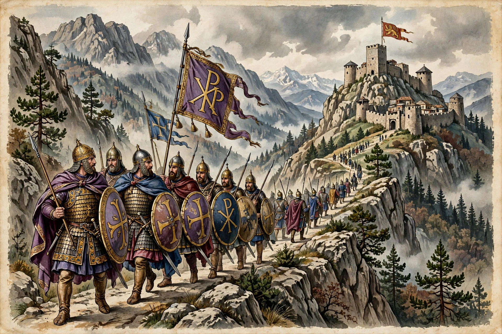

The Byzantine conquest of Bulgaria was a prolonged war between the Byzantine Empire and the First Bulgarian Empire, lasting with interruptions from the 970s until 1018, when Bulgaria was conquered and annexed by Emperor Basil II.

In 968 Rus' prince Sviatoslav invaded Bulgaria, prompting Byzantine intervention. Emperor John I Tzimiskes captured Preslav in 971 and annexed eastern Bulgaria, while a western Bulgarian state survived under the Cometopuli brothers, centred on Samuel.
Samuel restored Bulgarian power, raiding Greece and defeating the Byzantines at the Gates of Trajan in 986. Basil II responded with systematic annual campaigns, capturing fortresses, devastated crops and reducing strongholds one by one, earning the epithet Bulgar-slayer (Boulgaroktonos).
In 1014 at Kleidion, Basil won a decisive victory. Later tradition claimed he blinded thousands of prisoners, sending them home in groups of a hundred led by a one-eyed man — a story whose scale historians debate. Samuel died shortly afterwards, reportedly from shock.
Samuel's successors Gabriel Radomir and Ivan Vladislav could not resist. After Ivan's death at Dyrrhachium in 1018, Bulgarian resistance collapsed, Ohrid surrendered, and Bulgaria became Byzantine provinces — themes of Bulgaria, Paristrion and Sirmium. Basil preserved some Bulgarian institutions, notably the Archbishopric of Ohrid and taxation in kind, to secure submission.
Bulgaria remained under Byzantine rule until the uprising of Peter and Asen in 1185 founded the Second Bulgarian Empire. See also Basil II, Samuel of Bulgaria and First Bulgarian Empire.